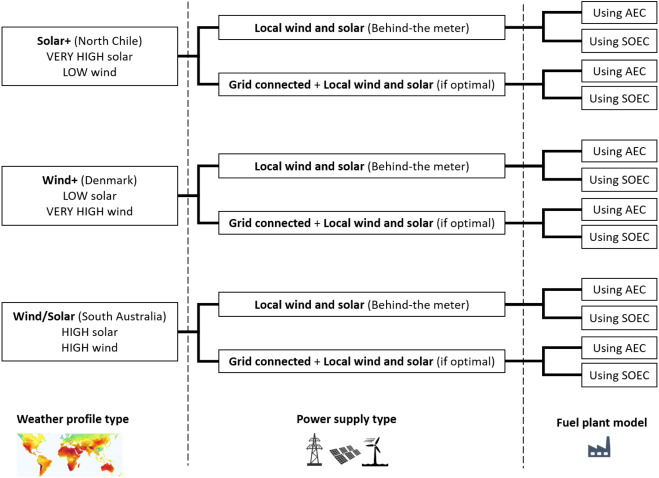

OptiPlantPtX documentation
Welcome to the OptiPlantPtX documentation!
OptiPlant is a tool that enables the user to model Power-to-X fuel production systems with a high variety of customizable input parameters and to optimize them according to different criteria. The tool is adapted to investigate a large number of scenarios and system configurations in a single run.

The current model optimize the operation and investment of an e-ammonia, DME, e-methanol or upgraded pyrolysis oil plant. The plant can be powered by solar, wind and/or the grid.
The model is designed in a way that the input parameters, the optimization objective, variables or constrains, and the outcoming results can be modified in a fairly easy way. The solving time on a personal computer is usually below 5 minutes using an open-source solver.
For a more detailed description of the OptiPlant model such as the components and structure of the simulated plant, the mathematical description of the optimization model, the sources of the data inputs or other considerations, one can check the following articles:
- Model description and ammonia production: https://doi.org/10.1016/j.rser.2022.113057
- Inclusion of CSP (concentrated solar power) technologies: https://doi.org/10.1016/j.renene.2024.121410
- Inclusion of upgraded pyrolysis bio-oils: https://doi.org/10.1016/j.enconman.2024.118225
- Inclusion of dimethyl ether (DME): https://doi.org/10.1021/acs.energyfuels.4c00311
- Comparison between measured and simulated PV data: https://doi.org/10.1016/j.rser.2024.115044
- Other related works: https://orbit.dtu.dk/en/persons/nicolas-jean-bernard-campion/publications/